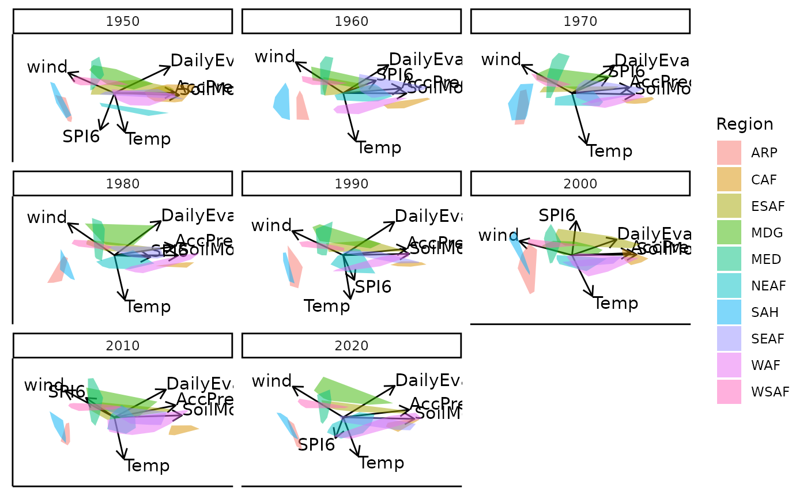
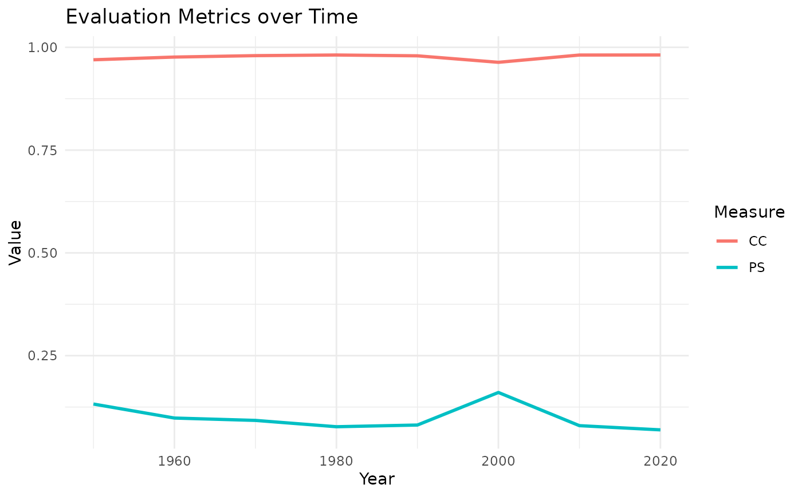
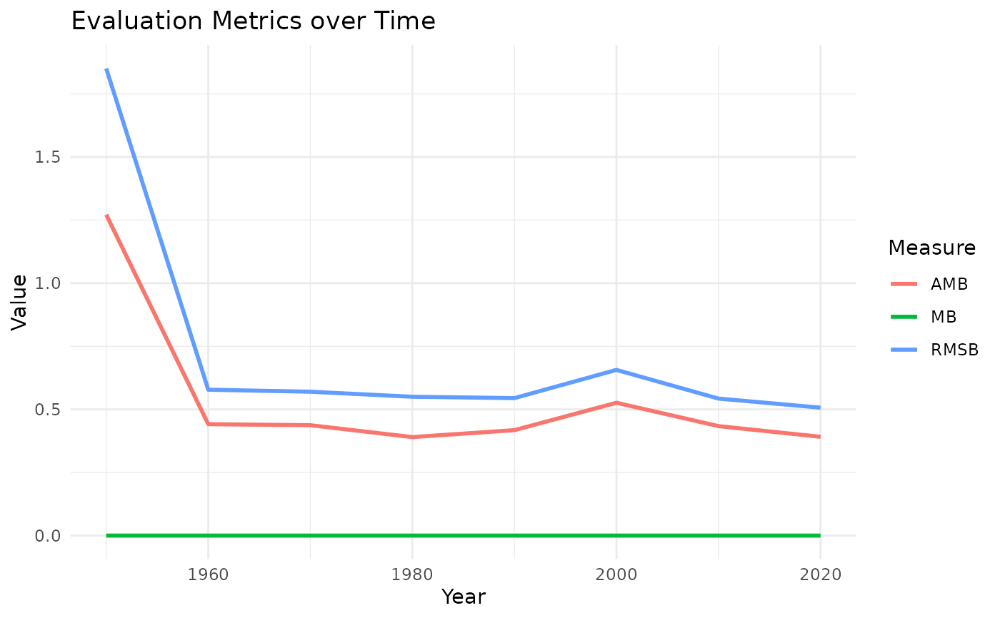
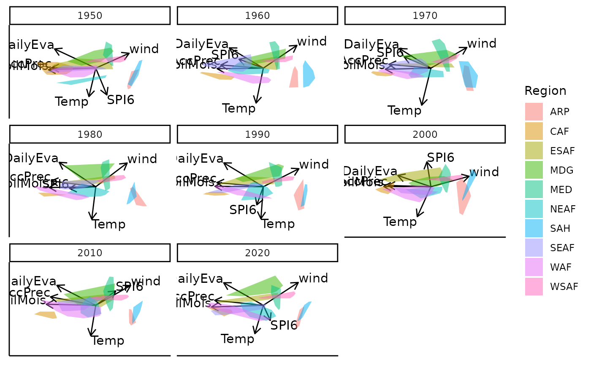
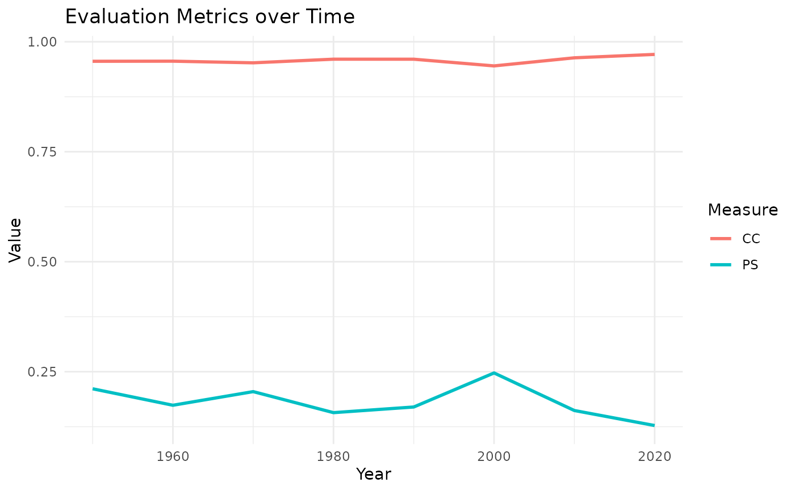
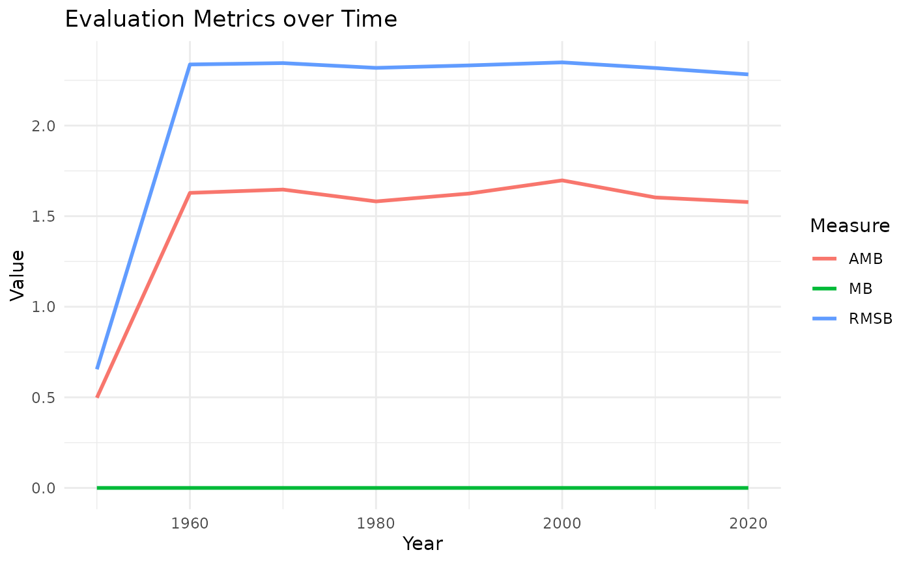
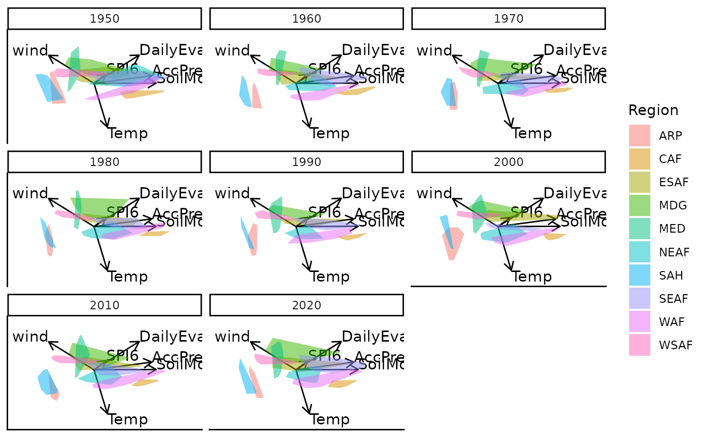
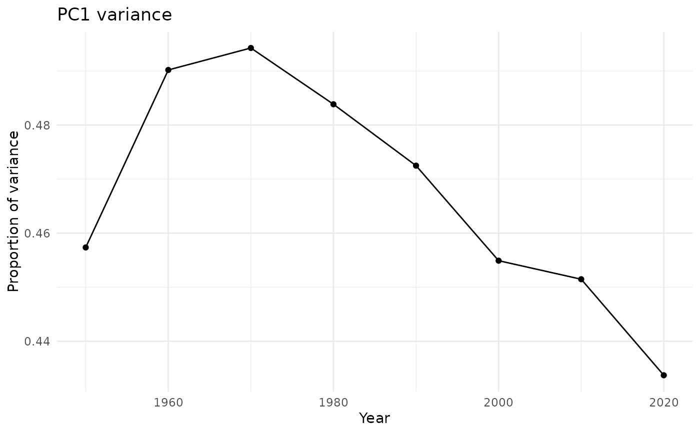
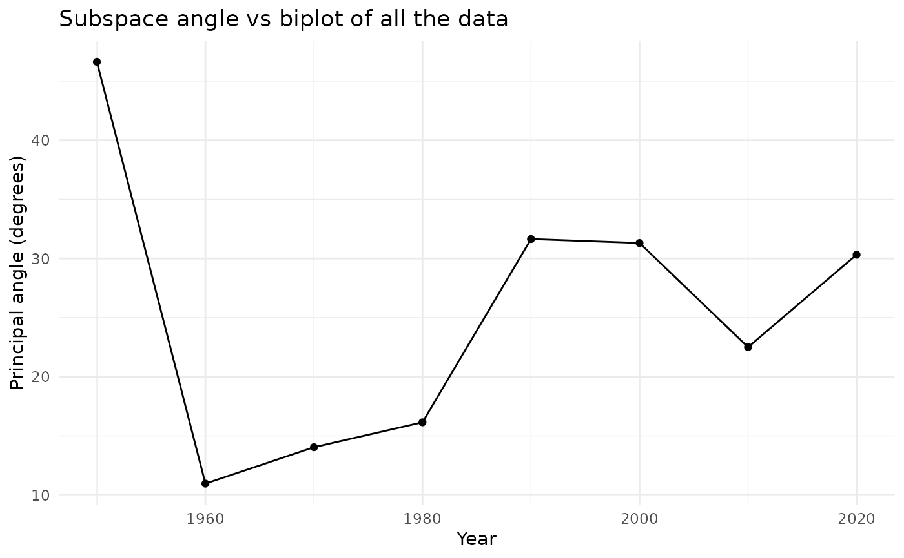
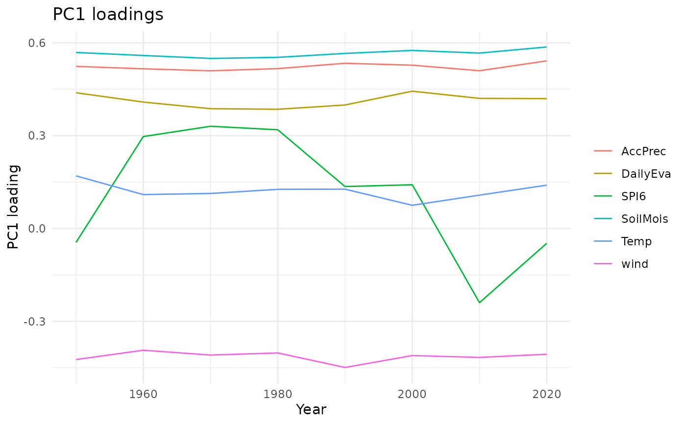

Measures of comparison for move plot 3
evaluation.RdThis function calculates measures of comparison after generalised orthogonal Procrustes Analysis
is performed in moveplot3. Orthogonal Procrustes Analysis is used to compare a target to a testee configuration.
The following measures are calculate: Procrustes Statistic (PS), Congruence Coefficient (CC), Absolute Mean Bias (AMB),
Mean Bias (MB) and Root Mean Squared Bias (RMSB).
Value
- eval.tab
Returns a table of the measures of comparison for each level of the time variable compared to the target.
- fit.plot
Returns a line plot with the fit measures that are bounded between zero and one: PS and CC. A small PS value and large CC value indicate good fit.
- bias.plot
Returns a line plot with bias measures that are unbounded: AMB, MB and RMSB. Small values indicate low bias.
- structure
For
moveplot, a data frame with the proportion of variance of the first dimension, the principal angle and the loadings on the first dimension for each level of the time variable.- var.plot
For
moveplot, a line plot of the proportion of variance of the first dimension over time.- angle.plot
For
moveplot, a line plot of the principal angle with the biplot of all the data over time.- loadings.plot
For
moveplot, a line plot of the loadings of the variables on the first dimension over time.- drift.tab
For
moveplot, a table of the Spearman rank correlations (rho) of each quantity with time, their p-values and whether they are significant at the 5% level (*).
Details
For moveplot, the function evaluates whether the fixed frame of moveplot(), where the variable
vectors are computed once on all the data, is adequate, or whether a biplot should be constructed for each time
slice with moveplot2() or moveplot3(). A PCA (or CVA) biplot is fitted to each level of the time
variable and compared with the biplot of all the data, see Details.
For moveplot, the following are computed for each level of the time variable, in the order of its levels:
the proportion of variance explained by the first dimension of the biplot of that time slice,
the largest principal angle (in degrees) between the two dimensional subspace of the biplot of that time slice and that of the biplot of all the data. Zero means that the time slice spans the same plane,
the loadings of the variables on the first dimension. The sign of each eigenvector is arbitrary, so the dimensions of each time slice are reflected to point in the same direction as those of the biplot of all the data (as
auto.aligninmoveplot2()) before the loadings are compared.
A Spearman rank correlation test between the order of the time levels and each of these quantities tests for a
monotone drift over time. A p-value of 0.05 or more fails to reject zero correlation: there is no evidence that
the structure of the biplot changes over time, the fixed frame of moveplot() is adequate, and
moveplot2() or moveplot3() are not needed. A p-value below 0.05 indicates a drift, and a biplot
should be constructed for each time slice. The test only detects monotone trends; large but non-monotone
changes are visible in the plots.
Examples
data(Africa_climate)
data(Africa_climate_target)
bp <- biplotEZ::biplot(Africa_climate, scaled = TRUE) |> biplotEZ::PCA()
results <- bp |> moveplot3(time.var = "Year", group.var = "Region", hulls = TRUE,
move = FALSE, target = NULL) |> evaluation()

results$eval.tab
#>
#>
#> Table: Measures of comparison
#>
#> | | PS | CC | AMB | MB | RMSB |
#> |:---------------|:-----:|:-----:|:-----:|:--:|:-----:|
#> |Target vs. 1950 | 0.132 | 0.970 | 1.272 | 0 | 1.851 |
#> |Target vs. 1960 | 0.098 | 0.976 | 0.441 | 0 | 0.578 |
#> |Target vs. 1970 | 0.092 | 0.980 | 0.437 | 0 | 0.570 |
#> |Target vs. 1980 | 0.077 | 0.981 | 0.390 | 0 | 0.550 |
#> |Target vs. 1990 | 0.081 | 0.979 | 0.418 | 0 | 0.545 |
#> |Target vs. 2000 | 0.160 | 0.964 | 0.526 | 0 | 0.656 |
#> |Target vs. 2010 | 0.080 | 0.981 | 0.434 | 0 | 0.543 |
#> |Target vs. 2020 | 0.069 | 0.981 | 0.391 | 0 | 0.507 |
results$fit.plot

results$bias.plot

data(Africa_climate)
data(Africa_climate_target)
bp <- biplotEZ::biplot(Africa_climate, scaled = TRUE) |> biplotEZ::PCA()
results <- bp |> moveplot3(time.var = "Year", group.var = "Region", hulls = TRUE,
move = FALSE, target = Africa_climate_target) |> evaluation()

results$eval.tab
#>
#>
#> Table: Measures of comparison
#>
#> | | PS | CC | AMB | MB | RMSB |
#> |:---------------|:-----:|:-----:|:-----:|:--:|:-----:|
#> |Target vs. 1950 | 0.211 | 0.956 | 0.498 | 0 | 0.655 |
#> |Target vs. 1960 | 0.174 | 0.956 | 1.629 | 0 | 2.337 |
#> |Target vs. 1970 | 0.205 | 0.952 | 1.647 | 0 | 2.345 |
#> |Target vs. 1980 | 0.157 | 0.960 | 1.582 | 0 | 2.319 |
#> |Target vs. 1990 | 0.170 | 0.960 | 1.625 | 0 | 2.332 |
#> |Target vs. 2000 | 0.247 | 0.945 | 1.698 | 0 | 2.349 |
#> |Target vs. 2010 | 0.162 | 0.964 | 1.603 | 0 | 2.318 |
#> |Target vs. 2020 | 0.128 | 0.971 | 1.578 | 0 | 2.283 |
results$fit.plot

results$bias.plot

# Should a biplot be constructed for each time slice?
bp <- biplotEZ::biplot(Africa_climate, scaled = TRUE) |> biplotEZ::PCA()
results <- bp |> moveplot(time.var = "Year", group.var = "Region", hulls = TRUE,
move = FALSE) |> evaluation()

results$drift.tab
#>
#>
#> Table: Spearman drift test
#>
#> |Quantity | rho | p | sig |
#> |:--------------|:------:|:-----:|:---:|
#> |pc1_var | -0.738 | 0.046 | * |
#> |angle_deg | 0.119 | 0.793 | - |
#> |load1_AccPrec | 0.405 | 0.327 | - |
#> |load1_DailyEva | 0.190 | 0.665 | - |
#> |load1_Temp | -0.238 | 0.582 | - |
#> |load1_SoilMois | 0.524 | 0.197 | - |
#> |load1_SPI6 | -0.524 | 0.197 | - |
#> |load1_wind | -0.071 | 0.882 | - |
results$var.plot

results$angle.plot

results$loadings.plot
